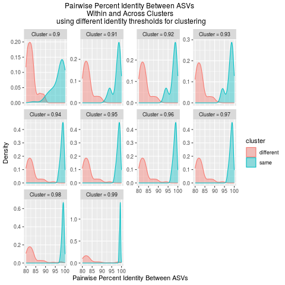
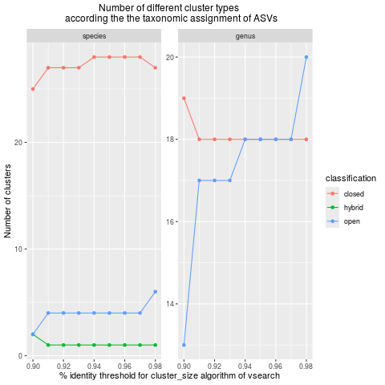

Best Practices
Emese Meglécz
2026-11-18
Source:vignettes/20-best-practices.Rmd
20-best-practices.RmdPackage version: 2.0.0
Tips - Good to Know
Data Structure
Dataset Composition
Sequences are typically derived from 96 samples, corresponding to a 96-well plate used for PCR amplification.
Each plate includes negative controls, mock samples, and biological samples. A single sequencing library is generated per replicate, with each library representing a set of 96 PCR reactions.
While vtamR can analyze datasets without controls or replicates, its full potential is realized when these features are utilized:
- Controls enable rigorous data filtering based on control sample content, reducing false positives and negatives.
- Replicates ensure reproducibility and minimize technical variability.
For projects exceeding 96 samples, analyses are conducted plate by plate.
- Consistent use of control samples ensures comparability across different libraries or time points (e.g., longitudinal studies tracking the same sites over time).
- Filtered datasets can be pooled using the
pool_dataset()function for integrated analysis.
Multi-Marker Analysis
vtamR supports the analysis of the same samples using multiple, strongly overlapping markers. For example, our demo dataset originates from a project Corse et al., 2017 utilizing two markers: MFZR and ZFZR.
Both markers target overlapping regions of the COI gene, where MFZR starts 18 nucleotides upstream of ZFZR.
Data from each marker should be first analyzed separately, than the filtered, validated occurrences pooled together. See the Pool Multiple Datasets section.
Log file
vtamR automatically generates a log file that records every major function called during an analysis. For each function call, the log includes:
- all arguments and their values, including default values that were not explicitly specified;
- the start and end time of the call; and
- the function’s runtime.
This log is extremely valuable for reproducibility. It lets you reconstruct exactly how an analysis was performed, even years later, even if the original script has been lost or modified. In effect, the log file is a complete record of your analysis workflow.
Two ways to set the log path
Option 1: Pass log_file to each function call. You can specify the path to the log file directly, using the log_file argument of each major vtamR function. This works, but it’s a bit laborious — it’s easy to forget the argument on some calls, or to accidentally use different filenames across calls, which leaves you with several files that each contain only part of the information.
Option 2: Set a package-level option once (recommended). A much simpler approach is to define the log path once, as a package option, at the start of your script. From then on, every logged function call is automatically appended to the same file — you don’t need to specify anything else. This does mean the log will accumulate every trial and attempt, which can get a bit messy, but you’ll always have the complete picture of what you did.
For all functions with a log_file argument, the log path is resolved in the following order of priority:
- the
log_fileargument, if it is provided in the function call; - the
vtamR.log_filepackage option, if it has been set; - a default file,
vtamR_log.csv, written to the working directory.
We strongly recommend using the package option, and that’s what we’ll do in the tutorials.
A tip for finalized pipelines
Once your pipeline is finalized, consider archiving the log file from your testing phase, then running the final pipeline with a fresh log_file. This gives you a clean, complete record of the exact procedure and parameters used to produce your final results — long after the analysis is done. It’s also the input for the miem_bioinfo() function, which extracts information from the log file to help you prepare documentation for publication (e.g. a MIEM checklist).
Using the log file comes with only a minor requirements — well worth the benefit of fully reproducible analyses:
Always name arguments explicitly when calling a function — for example, use my_function(input = my_file) rather than relying on positional matching (my_function(my_file)).
Data Frame or CSV File
Most vtamR functions can take either a data frame or a CSV file as input.
This is useful if you want to resume your analysis without rerunning earlier steps. For example, if you’ve closed your R session but saved your data frame to a file.
Arguments Accepting Data Frame or CSV
Many function arguments can accept either format, as long as the file or data frame contains the required columns. Common examples include:
read_countfastqinfofastainfosampleinfoinput_asv_listmock_compositionasvltg_paramsasv_tax
Check the help page of each function for the exact required columns: ?function_name.
Function Outputs
Many functions return a data frame. If you also specify outfile, the function will write the data frame to a CSV file at the same time.
Saving outputs as CSV is a good practice for long workflows. It allows you to:
- Inspect the dataset after each filtering step
- Resume processing later without rerunning earlier steps
Set Paths to Third-Party Programs
R can execute external programs directly if their executable are available in your system’s PATH (see Installation).
If an executable is not in your PATH, you must tell R where to find it. There are two ways to do this.
The first option is to provide the path to the executable using the xxx_path (e.g. vsearch_path, cutadapt_path) argument of each function that calls an external program. Although this approach works, it can become tedious, especially when the same program is used in several functions.
A simpler approach is to set a package option for each executable. Once these options have been declared, usually at the beginning of your script, vtamR can use them automatically. You will then no longer need to provide the corresponding xxx_path argument in each function call.
For example:
options(vtamR.vsearch_path = "C:/Users/Public/vsearch-2.23.0-win-x86_64/bin/vsearch")
options(vtamR.blast_path = "C:/Users/Public/blast-2.16.0+/bin/blastn")
options(vtamR.cutadapt_path = "C:/Users/Public/cutadapt")
options(vtamR.swarm_path = "C:/Users/Public/swarm-3.1.5-win-x86_64/bin/swarm")
options(vtamR.pigz_path = "C:/Users/Public/pigz-win32/pigz")In this example, the paths are configured for Windows. Replace them with the actual locations of the programs on your computer. To configure these options, locate the vsearch.exe, blastn.exe, cutadapt.exe, swarm.exe, and pigz.exe files, and specify their paths without the .exe extension.
To Compress or Not to Compress
During the first steps of the workflow (merge_fastq_pairs, subsample_fasta, trim_primers, demultiplex_and_trim_fasta), many intermediate files are generated. Some of these files can be very large, especially before dereplication (dereplicate).
File Size vs. Processing Time
Compressing and decompressing files between steps can take significant time. For this reason, vtamR outputs uncompressed files by default to speed up processing.
However, uncompressed files can quickly consume disk space. Remember to delete intermediate files once your analysis is complete. See Files to Keep for guidance on which files to retain.
If storage is limited, you can enable file compression by setting compress = TRUE in relevant functions (e.g., subsample_fasta, trim_primers, demultiplex_and_trim_fasta). This produces gzip-compressed output files.
Compression Methods
The method used is controlled by the compress_method argument. Three options are available:
"pigz"– Uses thePIGZprogram (parallel gzip). Requires installation, and if not in the systemPATH, its location must be provided viapigz_path. Works on Linux-like systems and Windows. Uses multithreading, making it the fastest option."gzip"– Uses the standardgzipcommand available on Linux-like systems. Slower thanpigzand not available on Windows."R"– Implemented in R via theR.utilspackage. Cross-platform, works everywhere, but is the slowest method.
Example: Compression Speed Comparison
For a 19 GB FASTA file (compressed size: 3 GB) on Linux:
| Method | Compression (min) | Decompression (min) |
|---|---|---|
| R.utils | 16 | 3 |
| gzip | 13 | 3 |
| pigz | 3 | 2 |
Summary
- The fastest workflow is to avoid compression during processing and clean up intermediate files afterward.
- If you want compressed files,
PIGZis clearly the best option. - See Installation for setup instructions.
Notes on Compatibility
The effect of compression may vary depending on which external programs are used:
- CUTADAPT and VSEARCH can often process gzip-compressed files directly.
- On Windows, some VSEARCH commands may not accept compressed files.
- CUTADAPT can produce gzip-compressed outputs on all systems.
- VSEARCH usually outputs uncompressed files, even when reading compressed inputs.
Detection of False Positives (FP), True Positives (TP), and False Negatives (FN)
The function classify_control_occurrences identifies occurrences as false positives, false negatives, or true positives based on control samples and habitat context.
True Positives (TP): All expected occurrences detected in a mock sample (i.e., ASVs that correspond to the species intentionally included in the mock community).
False Negatives (FN): Expected ASVs in the mock samples that are not detected during analysis.
-
False Positives (FP):
- Unexpected ASVs in mock samples (ASVs not included in the mock community).
- All ASVs detected in negative controls (indicating contamination or technical artifacts).
-
Habitat-inconsistent ASVs: ASVs detected in a sample but unexpected for its habitat. If samples or mocks originate from distinct habitats (e.g., seawater vs. terrestrial), the function evaluates the proportion of reads for each ASV across habitats. If the proportion of reads for an ASV in a given habitat is below the
habitat_proportionthreshold, the ASV is flagged as a false positive for all samples from that habitat.
Clustering or Denoising
The cluster_asv function supports two algorithms for grouping ASVs:
Available Methods
method = "vsearch" Uses VSEARCH’s cluster_size command, a greedy, centroid-based algorithm. ASVs are sorted by decreasing read count, so the most abundant ASVs become cluster centroids. The cluster radius is controlled by the identity parameter.
method = "swarm" Uses SWARM, a fast, iterative algorithm that clusters ASVs differing by d or fewer nucleotides. Clusters form naturally around local abundance peaks and are mostly insensitive to the input order.
Although both approaches perform clustering, they are often used for different goals.
Denoising vs. Clustering
1. Denoising
SWARM was originally designed as a denoising method for metabarcoding data. The principle is simple:
True biological ASVs tend to have high read counts, while very similar ASVs with lower read counts are likely sequencing errors.
Denoising groups likely erroneous sequences into the cluster of their true ASV, preserving ASV-level diversity.
Running SWARM with d = 1 and the fastidious option activated corresponds to this denoising goal.
Limitation: If two real biological variants differ by only one mutation, they may be merged, causing some loss of true variability.
Tip: While cluster_asv can run SWARM with d = 1 for denoising, the denoise_by_swarm function is specifically designed for this purpose. It runs SWARM with the same settings but adds a split_clusters option to retain intra-specific variability. After running SWARM sample by sample, clusters that contain ASVs with high relative abundance compared to the centroid can be split, preserving biologically meaningful diversity.
2. Clustering
Clustering aims to group ASVs (both true and erroneous) into units approximating biological taxa (species, genera, etc.).
- VSEARCH (
cluster_size) uses a fixed identity threshold for this. - SWARM with larger
dvalues can also produce taxon-like clusters.
Choosing the right threshold depends on the genetic marker and taxonomic group. vtamR provides tools to explore clustering outcomes across multiple thresholds.
Tools for Choosing a Clustering Threshold
1. Pairwise Identity Plots
For a range of thresholds, vtamR can generate density plots of pairwise identities:
-
plot_pairwise_identity_vsearch()– for VSEARCH thresholds -
plot_pairwise_identity_swarm()– for SWARMdvalues
These plots show how ASV similarities vary within and between clusters.

Pairwise Identity Plot per Cluster Identity Threshold for the original data
2. Cluster Classification
Clusters can also be classified based on the taxonomic assignments of the ASVs they contain:
- closed: All ASVs share the same taxon, and that taxon appears only in this cluster.
- open: All ASVs share the same taxon, but the same taxon also appears in other clusters.
- hybrid: The cluster contains ASVs assigned to different taxa.
The function PlotClusterClassification() shows the number of clusters in each class across thresholds.

Plot Cluster Classification for the original data
Interpreting the Plots
These visualizations help you choose an appropriate clustering threshold:
- Check if clusters are taxonomically coherent.
- See how identity (
VSEARCH) ord(SWARM) affects cluster structure. - Find a balance between over-splitting and over-merging biological units.
For more guidance, see the Cluster ASVs into mOTUs section.
Arguments
num_threads
By default, vtamR automatically uses all available CPU cores for multithreaded processes. If you want to maximize performance, there is no need to specify the num_threads argument.
However, you may want to limit the number of cores used—for example, to leave resources for other tasks or users. In that case, simply set the num_threads argument in the relevant function.
Example: This limits merge_fastq_pairs to use 8 CPU threads:
fastainfo_df <- merge_fastq_pairs(
fastqinfo = fastqinfo,
fastq_dir = fastq_dir,
vsearch_path = vsearch_path, # can be omitted if VSEARCH is in the PATH
outdir = merged_dir,
num_threads = 8
)
quiet
Some external programs used by vtamR can produce a lot of console output, even when they are run in their own “quiet” mode. This can make it hard to spot important warnings or errors.
The quiet argument controls whether this output is displayed:
-
quiet = TRUE(default): suppresses most messages, keeping logs clean. -
quiet = FALSE: shows all output, which can be useful for troubleshooting.
Tip: If a function fails or behaves unexpectedly, rerun it with quiet = FALSE to inspect the full messages and identify the problem.
sep
The sep argument defines the separator used in CSV files.
- Default:
","(comma) - Recommendation: Use the same separator in all CSV files to ensure consistency.
Exception: The taxonomy file of the reference database must be tab-separated (\t).
Files to Keep
During the preprocessing steps of the workflow (merge_fastq_pairs, random_sample_batch, demultiplex_and_trim_fasta, demultiplex_and_trim_fastq, and trim_primers), many intermediate files are generated. Some of these files can be very large.
Compressing and decompressing files between steps can be time-consuming, so vtamR produces uncompressed files by default. You can change this behavior using the compress option.
The following provides a practical guide on which files to keep, compress, or delete.
Preprocessing
Keep the information files (
fastainfo.csvandfastqinfo.csv) generated in the output directory. These files contain information about the files and samples processed during the workflow.Keep the files that can be submitted to the SRA. These are usually the outputs of
demultiplex_and_trim_fastq, where each pair of files corresponds to a sample replicate and the primers and tags have been removed.Compress subsampled files. If the files have been subsampled, you can compress them to save disk space. Alternatively, if you have set the
seedargument, the subsampling is reproducible, so these files can be safely deleted and regenerated if needed.Delete other intermediate files once you are satisfied that they are no longer needed.
dereplicate
The files generated by dereplicate are particularly important because dereplication can be computationally intensive.
Keep the dereplicated information file (e.g.,
1_before_filter.csvin this tutorial).Compress the file after analysis to reduce its size.
Keep this file for reproducibility. It allows you to restart the analysis from the dereplication step without repeating the potentially time-consuming merging and demultiplexing steps.
Keep and compress the updated ASV list (
ASV_list_with_IDs.csv). This file can be reused with later datasets to ensure thatasv_ids remain synchronized across analyses.
Outputs of filtering steps
Compress large files to save disk space.
Keep these files when possible, as they can be useful for tracing the history of a sample or ASV using
history_by, or for generating summary files usingsummarize_by.
This strategy provides a good balance between disk usage and reproducibility. It preserves the essential files needed to resume analyses, reproduce results, or audit the processing history, while allowing large intermediate files that can be regenerated to be safely removed.